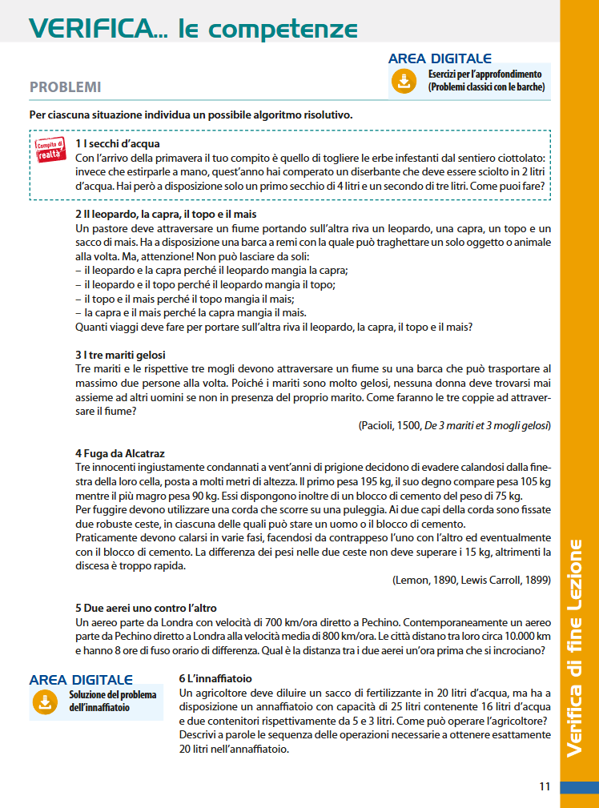

Metodo: per ogni problema individua dati, obiettivo e vincoli; progetta una sequenza di passi e controlla tutti gli stati intermedi prima di mostrare la soluzione.
Devi sciogliere un diserbante in esattamente 2 litri d'acqua. Hai a disposizione soltanto un secchio da 4 litri e uno da 3 litri, privi di tacche intermedie. Come puoi misurare i 2 litri?
Idea: usiamo la capacità libera di 1 litro nel secchio più grande per separare 1 litro dai 3 appena prelevati.
Un pastore deve attraversare un fiume portando un leopardo, una capra, un topo e un sacco di mais. La barca può trasportare, oltre al pastore, un solo animale oppure il sacco. Il pastore non può lasciare senza sorveglianza:
Quanti viaggi deve compiere per portarli tutti sull'altra riva?
Con questa capacità della barca il problema è impossibile.
Al primo viaggio il pastore può portare con sé un solo elemento e deve lasciarne tre sulla riva di partenza. Qualunque elemento scelga, tra i tre rimasti compare almeno una coppia vietata:
Poiché non esiste una prima mossa lecita, non può esistere una sequenza risolutiva.
Tre coppie devono attraversare un fiume con una barca che può trasportare al massimo due persone. Nessuna moglie può trovarsi con un altro uomo se il proprio marito non è presente. Come possono attraversare tutti?
Numeriamo le coppie da 1 a 3. La freccia indica il verso dell'attraversamento.
La sequenza contiene 11 attraversamenti. Per verificarla, controlla dopo ciascun passo che ogni moglie eventualmente presente con altri uomini sia accompagnata dal proprio marito.
Tre detenuti pesano rispettivamente 195 kg, 105 kg e 90 kg. Devono scendere usando due ceste collegate da una carrucola. Dispongono anche di un blocco di cemento da 75 kg. In ciascuna cesta può stare un uomo oppure il blocco; la differenza tra i pesi nelle due ceste non può superare 15 kg. Possono scendere tutti?
Con i vincoli indicati il problema è impossibile.
Per far scendere il detenuto da 195 kg, nell'altra cesta dovrebbe salire un singolo carico compreso tra 180 kg e 210 kg. I soli carichi disponibili sono 105 kg, 90 kg e 75 kg: nessuno rispetta il limite di 15 kg.
Combinare il detenuto da 105 kg e il blocco da 75 kg produrrebbe 180 kg, ma violerebbe la regola secondo la quale in una cesta può stare un uomo oppure il blocco. Il detenuto da 195 kg non può quindi compiere alcuna mossa lecita.
Un aereo parte da Londra verso Pechino a 700 km/h. Contemporaneamente un secondo aereo parte da Pechino verso Londra a 800 km/h. Le città distano 10 000 km e hanno 8 ore di fuso orario. Qual è la distanza tra i due aerei un'ora prima che si incrocino?
La velocità di avvicinamento è 700 + 800 = 1500 km/h. Un'ora prima dell'incrocio, la distanza è quindi 1500 km.
La distanza iniziale e il fuso orario non servono: gli aerei partono contemporaneamente e la domanda riguarda l'ultima ora prima dell'incontro.
Un agricoltore deve diluire del fertilizzante in 20 litri d'acqua. Ha un innaffiatoio con capacità di 25 litri che contiene già 16 litri d'acqua e due recipienti non graduati da 5 e 3 litri. Come può portare l'acqua nell'innaffiatoio a esattamente 20 litri?
Occorre misurare 4 L e aggiungerli ai 16 L già presenti.
16 + 4 = 20.L'immagine rimane disponibile come riferimento, mentre gli enunciati precedenti sono stati riportati in formato HTML.
